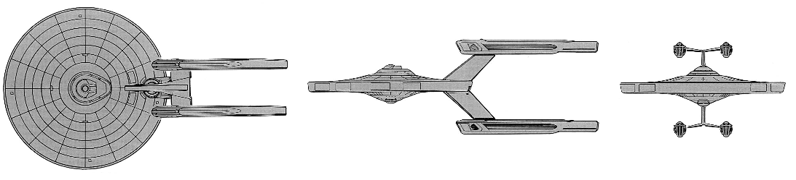

Constellation-class Star Cruiser (UFP)

Battle Stats
Engines and Superstructure
Total Power Units - 92 (Warp Drive - 4x20, Impulse - 12)
MPR - 4/1
Superstructure - 32
Maximum Warp - 3
Industry Points to Build - 8
Beam Weapons (Phasers)
Max Power - 12
Firing Chart - T
Arcs - 2f/p, 2f/s, 2a
Bonuses - +3(1-5) +2(6-12) +1(13-18)
Missile Weapons (Photon Torpedoes)
Power to Arm - 1
Damage - 20
Firing Chart - S
Arcs - 2F/P/S, 2A/P/S
Deflector Shields
Max Shield Power - 18
SPR - 1/4